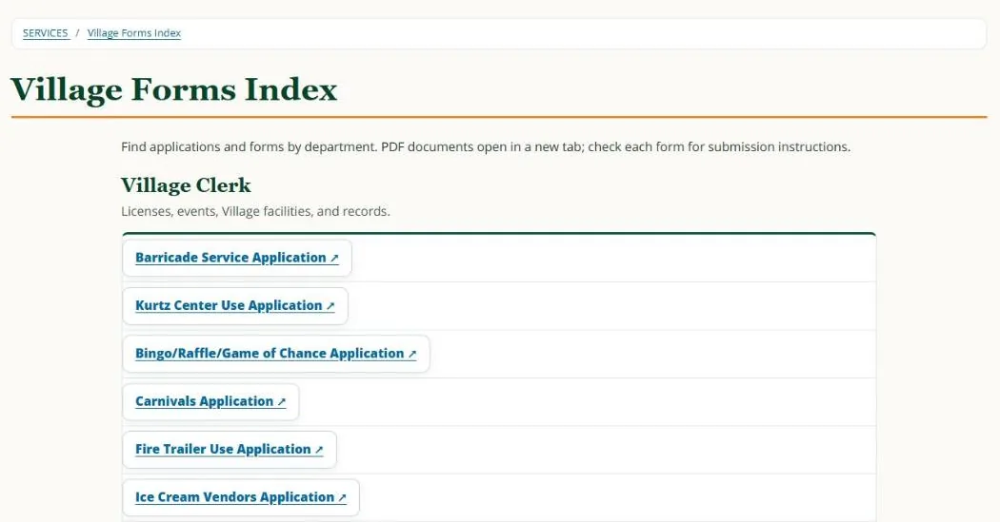

01 / Service design · Systems · Build
↑ All projectsA form is not a finished service.
A resident comes to the Village website to do something, not to learn the organization chart. Finding a form, requesting a facility, paying a fee, and getting approval should feel like one understandable service.
- Status
- Forms Index published · Booking flow tested
- My role
- Sole in-house UX and service-design lead: content audit, forms index, flow design, EvoGov configuration and testing.
- When
- 2026
- Worked with
- Clerk and departments (requirements); EvoGov vendor (platform limits).
One public index. Seven resources set up for requests.
A central Forms Index is live. The EvoGov facility workflow is configured for seven resources (Louis Kurtz Center, Darden Center, Memorial Park soccer field, Memorial Park basketball courts, Kennedy Park, Gould Park, and the portable stage) and was tested on controlled requests from new request to confirmed to cancelled, with the public calendar reserving and releasing the slot. Online payment and finer-grained staff permissions are not in place yet.
Exhibit / How a facility request moves
Before · Now · Designed nextBefore: in person only
No online request existed. Two visits to Village Hall.- Go to Village Hall
- Pick up a paper application
- Fill it out
- Come back with everything
- Pay at the Clerk’s office
Now: online request
Live as of Oct 2026. The page states a request isn’t approved until confirmed.- Log in or create an account
- Choose facility, date and time, and event details
- Submit request
- Clerk reviews and confirms
- Clerk sends payment and insurance instructions
Designed next
Blueprint · deploying early Nov 2026- Submit request, no account needed
- Clerk approves
- Pay online after approval
- One reference number tracks it to completion
Resident actsVillage staff acts
Exhibit / The live pages
Captured Oct 26, 2026
Both are public pages. The public page lists three facility applications. The booking portal itself requires an account, so the seven-resource configuration and the test requests aren’t visible here.
The public website as evidence
Dated records · Live pagesA public trail across the Village's website. The archived versions are point-in-time reference pages; the current links let you inspect the live task pathways and content structure. These four areas illustrate the broader service-design scope.
Homepage
Task-based routes to report problems, find forms, make payments, and locate Village services.
Village Clerk
Public notices, meeting records, Clerk forms, and a connection to the central forms index.
Assessor
Direct pathways to property lookup, exemption forms, assessment rolls, and review information.
Community Development
Team profiles, featured event flyers, newsletter bulletin, and local support links.
More historical reference pages (Building, meetings, taxes, Section 8, Mayor’s Office) +
Some dated snapshots are intermediate project states rather than pre-project baselines. Comparison links document site evolution; they do not by themselves prove authorship, increased task completion, or a completed end-to-end payment system.
The story in four frames
30-second readResidents have tasks, not departments
Someone looking for a permit or a facility shouldn’t need the Village org chart first. Forms, payments, and instructions lived on separate departmental pages, and for facilities there was nothing online at all: pick up a paper application at Village Hall, fill it out, come back with everything, and pay at the Clerk’s office.
Judgment callTreat findability as one stage of the service, not the finish line.
I mapped both sides of the counter
I inventoried forms and links, reviewed navigation and homepage hierarchy, then followed facility requests through staff approval, rental rules, availability, and payment.
Judgment callUnderstand the backstage work before promising a frictionless front end.
A request is not a booking
Residents can choose a facility and request a date, but staff review comes before approval, so the flow says so: request, review, confirmed. EvoGov also couldn’t natively support every custom field, permission, or seasonal cutoff I wanted.
Judgment callChoose reliable native behavior staff can maintain over an elegant feature they can’t.
I tested what would actually happen
The Forms Index is live. Seven resources were configured, and controlled test requests moved from new to confirmed to cancelled while the public calendar reserved and released the slot.
Judgment callReport what was published and tested. Label payment integration and the no-account flow as the next release, not the running system.
What I owned
I organized forms into a central index, reviewed task navigation and homepage hierarchy, and translated paper facility rules into a native request workflow. I mapped the resident and Clerk steps, including a future approval-before-payment model, then tested calendar states and holidays and documented what still needs staff or vendor support.
The reframe
It isn’t enough for a resident to find the right form. The institution has to know what happens after they submit it.
What this doesn’t show
The native portal still requires an account. PayIt approval-to-payment integration, granular staff permissions, and several paper-form validations are not implemented. The single-reference-number, no-account flow in my October 2026 blueprint is the next release, scheduled for early November 2026, not the running system as of this writing. There is no usage or completion data yet.
Decisions and tradeoffs
- Organize by department or by task?
- Chose: a common Forms Index, with official departmental ownership retained.
- Let residents “book,” or request approval?
- Chose: explicit request and confirmed states, so the page never promises instant approval.
- Force custom functionality, or use native CMS features?
- Chose: a tested, maintainable native flow, with the limitations recorded.
- Payment at request or after review?
- Designed, next release: charge after approval. PayIt integration is unverified.
Read the full write-up (about five minutes)
A resident comes with a task
A resident looking for a permit shouldn’t need to know which department handles it before they can begin. But municipal websites often reflect how government is organized internally rather than how residents experience a need. In Spring Valley, forms, payments, department pages, and service instructions lived in different places. The challenge wasn’t only visual inconsistency. A resident could find a document and still have no clear idea how to finish the task.
I followed the path beyond the link
I reviewed the website’s navigation, organized a public Forms Index, and worked on homepage hierarchy and access to common services. Facility requests became a useful test of the whole system, because the process had no online path at all. A resident needed to select a facility, choose a date, explain the event, and wait for staff approval. Behind the scenes, someone had to check availability, insurance, fees, and scheduling rules.
What I had to give up
My ideal experience was simple: pick the place, request the time, understand exactly what happens next. EvoGov’s native tools imposed real limits. The portal required login, permissions were too broad for some intended viewers, not every paper-form rule could be enforced automatically, and seasonal sunset cutoffs weren’t supported as requested. I worked within the controls we could validate instead of inventing an interface staff couldn’t operate.
The observable result
The Forms Index went live. Seven facility and stage resources were configured for public requests. Two controlled test records exercised confirmation and cancellation, and the public calendar reflected those status changes. That is a usable foundation, not a finished payment-and-permit service. The October 2026 flow map describes the next release, scheduled for early November 2026, with one reference number and approval before payment; it is not the operating system yet.
What stayed with me
The visible page was only half the problem. A simpler resident experience holds up only when staff can receive the work, interpret its status, and carry it to completion.
Sources and claim boundaries
Sources: the published Forms Index; the September 30, 2026 EvoGov facility setup and test record (test requests #1000 and #1001, plus holiday and year-end availability checks); Bookings and Forms User Flows (October 20, 2026).
See it live: Village facility booking page ↗. This is the current public entry point. It does not include the future-state features described above.